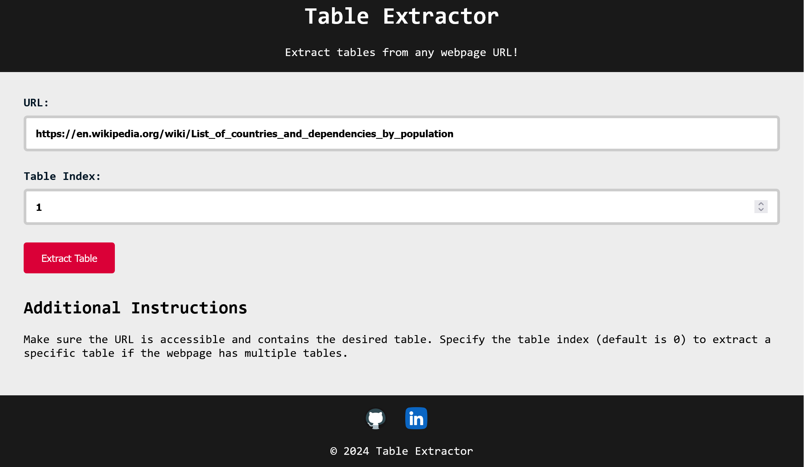
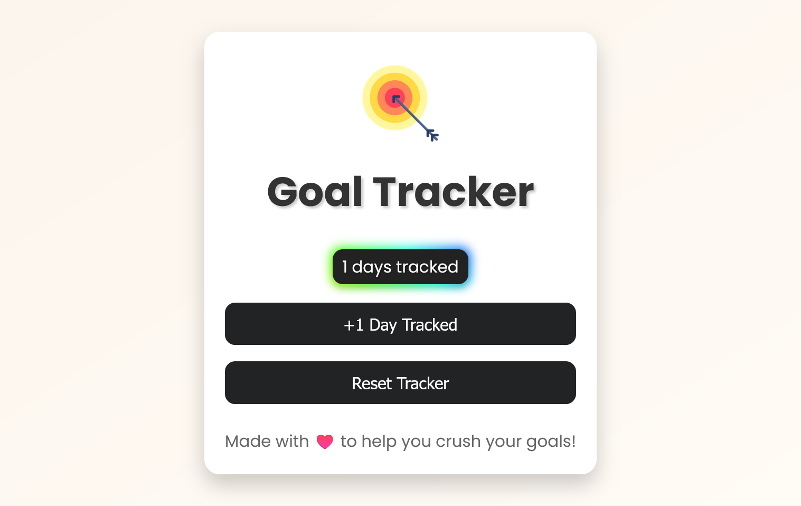
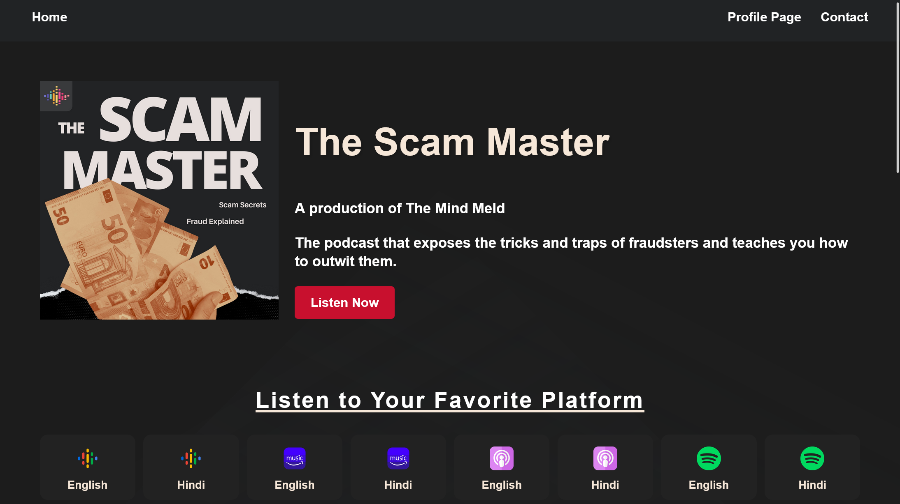

Email: kalbandetanmay@gmail.com
Phone: 737-838-1494
Tanmay Kalbande
Personal Projects
Table Extractor
A Flask web application for extracting tables from any webpage URL, utilizing BeautifulSoup for web scraping and DataTables for efficient table display.
Duration: Dec 2023 - Jan 2024
Description: The Table Extractor is a web application that allows users to extract tables from any webpage by providing the URL of the page. It utilizes Flask as the backend framework, BeautifulSoup for web scraping, and jQuery DataTables for efficient table rendering on the frontend. The application enables users to specify a table index in case a webpage contains multiple tables and provides the option to download the extracted data in CSV format.
Features:
- Table Extraction: Enter the URL of a webpage and, optionally, the index of the desired table to extract tabular data efficiently.
- Dynamic Table Rendering: Utilizes jQuery DataTables to dynamically render the extracted table, providing features like sorting, searching, and pagination.
- CSV Download: Download the extracted table data in CSV format for further analysis or storage.
- Responsive Design: The application is designed to work seamlessly on various screen sizes, providing a consistent user experience.
Technologies Used:
- Frontend:
- HTML, CSS, JavaScript
- jQuery DataTables for dynamic table rendering.
- Backend:
- Flask (Python web framework)
- BeautifulSoup for web scraping
- pandas for data manipulation
- Flask-CORS for handling cross-origin resource sharing
Screenshots

Links
Demo: Table Extractor Web App
GitHub: Table Extractor Repository
Goal Tracker Web App
Welcome to Goal Tracker – the perfect tool to help you achieve your goals one day at a time!
Duration: Sep 2023 - Sep 2023
Description: Welcome to Goal Tracker – the perfect tool to help you achieve your goals one day at a time!
Goals:
- Easily Track Your Progress
- Daily Goal Tracking
- Custom Goals
- Reset Whenever Needed
- Visualize Your Progress
- Share with Friends
Customization: Personalize it to your liking by modifying the CSS styles in the style.css file. Adjust colors, fonts, and other design elements to make it your own.
Screenshots

Links
Demo: Goal Tracker Web App
GitHub: Goal Tracker Repository
The Scam Master Podcast Website
The website for "The Scam Master" podcast, exposing fraudsters and guiding listeners on outwitting them.
Duration:July 2023 - Sep 2023
Description: The Scam Master podcast website serves as a platform to educate and entertain listeners about various scams, tricks, and tactics used by fraudsters. The website design focuses on providing a user-friendly experience with easy navigation to episodes, platforms, and social media links.
Features:
- Engaging Hero Section: Introduces the podcast with a captivating logo and tagline.
- Platform Accessibility: Allows users to listen on various platforms such as Spotify, YouTube, and Amazon Music.
- Latest Episodes Showcase: Displays the most recent podcast episodes with embedded Spotify players.
- Social Media Integration: Connects with the audience through Instagram and other social media channels.
Technologies Used:
- HTML, CSS for Frontend
- Embedded Spotify Players for Episodes
- Responsive Design for Various Screen Sizes
Screenshots

Links
Website: The Scam Master Podcast Website
Instagram: The Scam Master on Instagram
GitHub: The Scam Master Repository